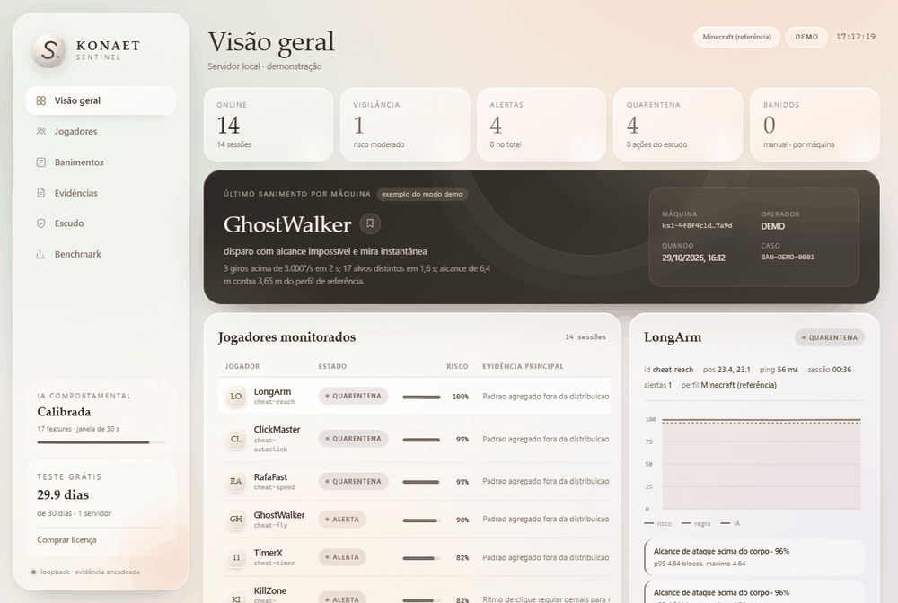

último banimento · máquina
GhostWalker exemplo
Disparo com alcance impossível e mira instantânea.
- máquina
ks1-4f8f…7a9d- caso
BAN-2026-0184
sem cartão · trial local de 30 dias
anti-cheat comportamental · v1.3
Uma IA que enxerga comportamento, um escudo que tira o efeito do cheat da partida e uma evidência que se sustenta. Sem banir no automático.
Sem cartão. Sem cadastro. O teste começa na primeira execução. O binário não é assinado; o SHA-256 está publicado.
Disparo com alcance impossível e mira instantânea.
ks1-4f8f…7a9dBAN-2026-018401 o problema
A sensação que expulsa jogador não é o hack. É assistir, sem poder fazer nada, enquanto a regra do jogo deixa de existir.
O Sentinel foi desenhado para o outro lado: o jogador que chegou primeiro, treinou a mira, aprendeu o mapa. Ele não precisa entender de anti-cheat. Precisa que o servidor continue justo.
Konaet · engenharia de jogo limpo
02 o produto
Regra imediata, IA para o que se esconde, escudo para quem está limpo e memória para o caso que passou. O ban continua sendo do operador — por desenho, não por falta de recurso.
Velocidade contra o limite do perfil, subida sem autorização, alcance, quebra abaixo do tempo mínimo, cadência de pacotes. Medidas objetivas, resposta imediata.
Regressão logística treinada em janelas de 30 s, com contribuição por sinal. Ela pega a variante que fica abaixo da regra — e mostra exatamente o que puxou o score.
O adaptador recebe comandos e aplica no servidor: movimento preso à física, hits cancelados, blocos limitados, combate isolado. Quem está limpo não paga pelo cheat do outro.
Escapou? O operador confirma; as últimas janelas viram um caso encadeado. Se o padrão passar nos gates, a memória entra no motor na hora — sem retreinar o modelo-base e com rollback no painel.
“p95 de alcance 6,4 m contra 3,65 m do perfil · 17 alvos em 1,6 s · giro de 3.420°/s”
91c4…7a1e
#01827e2f…b93c
#01834d8a…c210
03 a inteligência
Não é uma caixa-preta que cospe “cheater”. É um modelo pequeno, auditável e calibrado, com 17 medidas que o servidor já observou. Cada alerta vem com a contribuição de cada sinal.
Compara a mediana da velocidade líquida em pares de 0,25–0,6 s com o máximo legítimo do perfil. A mediana ignora atraso de rede em pares isolados; um cheat sustentado desloca todos os pares.
0,82*Dataset sintético e determinístico do próprio simulador. Prova o pipeline e os gates; não prova generalização para o seu servidor.
A IA foi calibrada no perfil de referência. Nos outros perfis, as regras rodam sozinhas até existir telemetria rotulada para uma nova calibração. ver perfis
04 qualquer servidor
O protocolo é o mesmo; o perfil muda o que é fisicamente possível em cada jogo. Escolha um perfil para ver os limites e o que a IA já consegue medir.
Distância de arma não é alcance de braço. O perfil desliga a regra de reach e mantém velocidade, vertical e mira — sem inventar comparação com Minecraft.
TCP em loopback ou POST /api/ingest. Um evento por linha, relógio do servidor, sem hook no cliente do jogador.
{"type":"join","player":"p1","name":"Fulano",
"game":"dayz","machine":"ks1-…","t":0}Perfis para servidores que você opera. Servidores oficiais de PUBG, Call of Duty e Battlefield não permitem inserir telemetria sem autorização do operador; o Sentinel não faz bypass de anti-cheat de terceiros.
05 identidade de máquina
O Sentinela não precisa saber quem é você. Guarda um hash da máquina, com sal do servidor, e só o operador decide quando aquilo vira banimento. A decisão vem com nome, motivo, porquê e um caminho de apelação.
ks1-4f8f4c1d…7a9dBAN-2026-0184Hash, não identificador cru. Sem atestação de GPU: os limites estão escritos.
Ela reconhece a mesma instalação quando o operador decide banir. É um pseudônimo estável — não uma impressão digital forense. Trocar placa, reinstalar o sistema ou usar máquina compartilhada muda o hash, e isso está documentado em vez de escondido.
Launcher ou servidor confiável calcula a impressão.
Sentinela aplica sal e guarda só o SHA-256.
O operador registra o ban manual, com motivo.
O adaptador lê /api/protect e remove o jogador.
06 o escudo
O motor não protege o PC do adversário. Ele protege a partida: o servidor aplica os comandos do escudo só contra quem foi sinalizado, e só depois de uma regra forte ou duas janelas de IA muito altas.
Nenhum jogador é banido pelo escudo. A quarentena é de combate, não de conta.
cancel_hits · conceal_targets
Exemplo ilustrativo. O adaptador decide como aplicar cada comando.
07 memória operacional
Quando você confirma uma trapaça, o Sentinel congela as últimas janelas, valida o padrão contra as âncoras legítimas e coloca a memória no motor em menos de um segundo. Sem reiniciar, sem retreinar o modelo-base e sem ban automático.
Um alerta não vira caso sozinho. O operador olha a evidência e decide “trapaça” ou “limpo”. A confirmação é o único gatilho do aprendizado.
O caso precisa de ao menos duas janelas, separação do legítimo, FPR ≤ 2% nas âncoras e leave-one-out. Caso envenenado ou disperso é registrado, mas não entra.
A memória vira uma quarta linha no gráfico, reversível no painel. O journal encadeado guarda cada confirmação para a auditoria; o modelo-base segue intacto.
Aprendizado sob confirmação humana, não autônomo: nenhuma janela é rotulada sozinha e nenhuma memória é enviada para a Konaet. Números sintéticos; o seu servidor exige a sua telemetria rotulada.
08 a prova
| gate | meta | resultado | estado |
|---|---|---|---|
| Regras pegam cheats overt | ≥ 0,90 | 1,000 | PASS |
| Híbrido pega cheats stealth | ≥ 0,80 | 1,000 | PASS |
| Falso positivo por sessão legítima | ≤ 0,02 | 0,000 | PASS |
| AUC do modelo por janela | ≥ 0,90 | 0,9996 | PASS |
| Recall híbrido geral | ≥ 0,85 | 1,000 | PASS |
*Sintético, gerado pelo simulador no mesmo protocolo do jogo. Prova o pipeline e os gates neste dataset; não prova generalização para o seu servidor. A validação em produção usa telemetria rotulada sua.
Robustez em 4 seeds × 9 cenários (perda, duplicata, ruído, atraso, teleporte legítimo): pior falso positivo 0,000, pior recall 1,000, AUC mínima 0,9988.
central de provas: comparativo e auditoria abrir benchmark.json abrir robustness.json abrir adaptation.json
[PASS] legítimos sem alerta 6/6
[PASS] cheats detectados 8/8
[PASS] nenhum ban automático 0 bans
[PASS] unidade DayZ = m/s 30.00 m/s
[PASS] perfil CS2/CS:GO regras
[PASS] modelo carregado fc4c3f7a...
RESULTADO: PASS · 6/6 gatesO mesmo comando que você roda no seu PC. Dataset sintético, motor real: prova o pipeline e as regras; não prova detecção no seu servidor.
baixar e rodar a provaO .exe não tem assinatura digital. Se o Windows avisar, confira o SHA-256 publicado no repositório e o HASHES.txt do pacote antes de executar.
09 planos
Preço em BRL, pagamento por PIX. A licença é emitida após a confirmação e enviada ao e-mail informado.
Para provar no seu servidor, sem cartão e sem cadastro.
O teste começa na primeira execução.
Um servidor de verdade, com o escudo ligado.
Renovação manual, sem cobrança automática.
Para redes com mais de um servidor.
Licença com 5 assentos.
Todos os planos incluem adaptador de referência, dashboard local e cadeia de evidência SHA-256.
10 dúvidas
Se a resposta for “não”, ela começa com “não”. O produto é medido, não mitificado.
falar no WhatsAppNão. Nenhum é. O que entregamos é medição: gates de recall e falso positivo, benchmark reproduzível e evidência por alerta. O modelo foi avaliado em dataset sintético; o seu servidor é o teste que vale.
O motor é agnóstico. Ele consome eventos no protocolo JSONL (movimento, ataque, dano, e opcionalmente quebra/colocação). O adaptador é a única parte específica do jogo. A v1.1 inclui adaptador de referência para Minecraft, perfis para oito físicas e um adaptador genérico; para outro título, você escreve a tradução dos eventos do seu servidor.
Não afirmamos isso sem medição. O VAC é fechado e não publica recall, falso positivo nem latência por alerta; o Sentinel publica os gates do dataset sintético e o laudo de cada alerta. O que dá para comparar com honestidade é auditabilidade, explicação, operação no seu servidor e ausência de ban automático. Desempenho superior em servidor oficial da Valve não é testável: não existe integração autorizada. O perfil CS2 serve para comunidade ou servidor dedicado com telemetria autorizada — não é VAC, nem substituto dele.
Não sem autorização do operador. Servidores oficiais não aceitam telemetria externa nem plugins arbitrários, e o Sentinel não faz bypass de anti-cheat de terceiros. Os perfis existem para servidores dedicados, mods autorizados e comunidades que controlam a própria infraestrutura.
Não. É um hash salgado de componentes do sistema, calculado no processo confiável do servidor ou launcher. Não lê GPU, não é infalsificável e muda com reinstalação/troca de hardware. O ban é manual, com motivo, evidência, operador e apelação. Máquina compartilhada pode gerar falso positivo — por isso a revisão humana existe.
Não. Você baixa, roda e usa por 30 dias. O trial é local e selado na máquina. Depois do prazo, o serviço para e mostra a data; a chave reativa sem reinstalar. Apagar o estado local reinicia o teste — esse limite está documentado, não escondido.
Não. O Sentinel sinaliza, encadeia evidência e aplica mitigação no combate. A decisão de banir, expulsar ou revisar continua humana. Ban automático por modelo é como se perde jogador inocente.
Não. Ingestão e dashboard escutam em loopback. Não há telemetria para a Konaet, CDN no dashboard nem analytics no site. A licença é verificada offline. O único dado que sai é o que você envia no checkout (e-mail e comprovante).
O checkout gera um BR Code estático com valor e código de pedido. Após pagar, envie o comprovante no WhatsApp com esse código e o e-mail. A chave é emitida manualmente e enviada ao e-mail informado.
10 comece hoje
Baixe o teste, rode o dashboard e veja o motor trabalhar no modo demo. Se fizer sentido, a chave está a um PIX de distância.